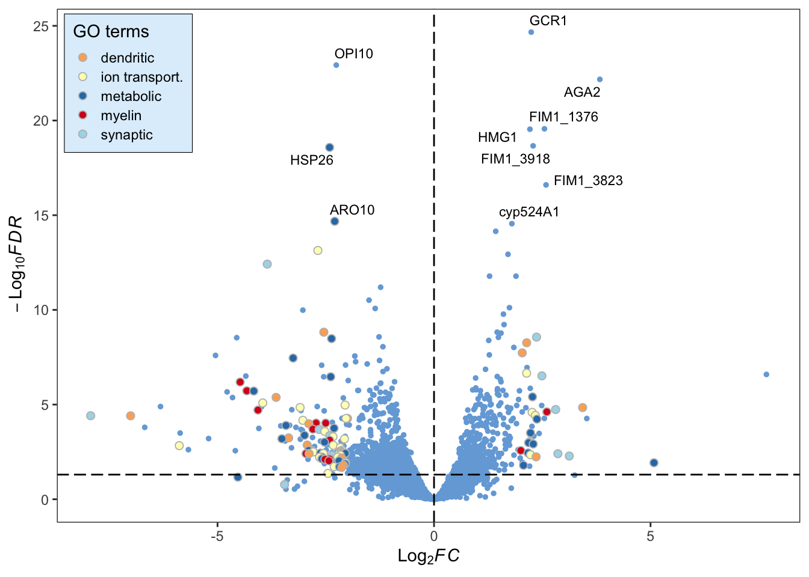

Tools for interacting with data from experiments done in microtiter plates. Easily read in plate-shaped data and convert it to tidy format, combine plate-shaped data with tidy data, and view tidy data in plate shape.
Use friendly colors in a graph with ggplot2
plater makes it easy to work with data from experiments performed in plates.
